Adianta · app-carta · 28 julio 2026
Quince registros visuales, cada uno un mundo completo (paleta, pareja tipográfica, ley de composición y tipo de fotografía) atado a un arquetipo de restaurante. No son quince temas de color sobre el mismo diseño: cada uno se compone de forma distinta, y cada uno roba su firma al mejor del mundo de su arquetipo.
Cómo se enseña: abra uno en el móvil y páseselo al dueño. Todos son un solo fichero HTML, funcionan sin conexión al panel y están medidos a 390 y 360 px. Las referencias de las que salen están en el tablero.
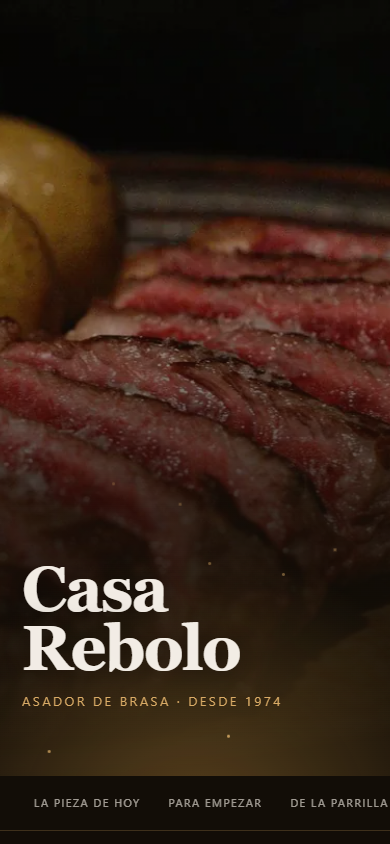
01 · BRASA
Asador · parrilla · casa de comidas
Prólogo de sólo texto, pieza del día a sangre (ahora en vídeo) y lista de una columna. Nada flota sobre la comida.
Vende: el asador lleva 40 años vendiendo fuego y su carta es un PDF.
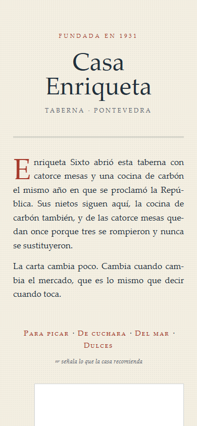
02 · PAPEL
Taberna con historia · café · casa fundada en 19XX
Modo claro, texto justificado con capitular, foto virada dentro de marco y el pie girado en el margen. El plato es un párrafo, no una tarjeta.
Vende: al que tiene fotos del abuelo en la pared y no sabe usarlas.
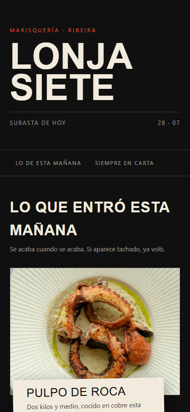
03 · MERCADO
Marisquería · producto de temporada · lonja
Etiquetas de conserva pegadas sobre la foto, giradas y desalineadas. El alérgeno deja de ser una barra gris y pasa a ser un sello de origen.
Vende: al que compra bien y no sabe contarlo.
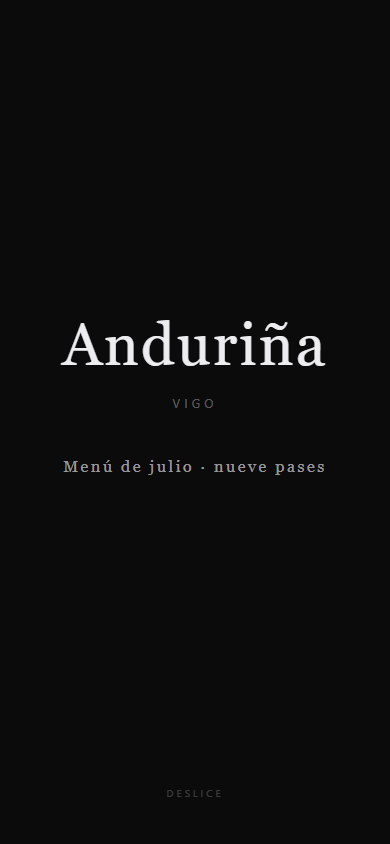
04 · GALERÍA
Alta cocina · menú degustación · estrella
Scroll-snap vertical: cada pase ocupa la pantalla entera. Cero acento de marca (el color lo pone el plato) y el precio aparece una sola vez, al final.
Vende: en un degustación de 120 €, una rejilla de tarjetas abarata.
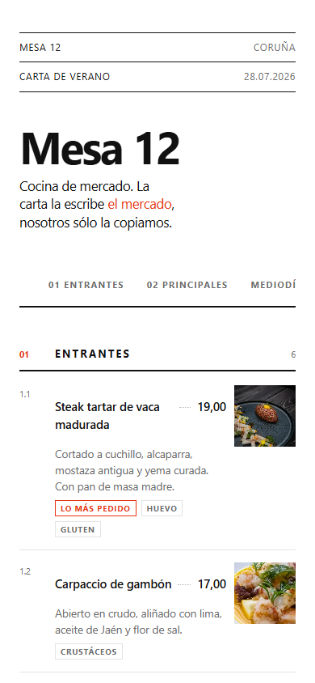
05 · SUIZO
Bistró moderno · cocina de autor urbana · brunch
Blanco puro, retícula visible, numeración 1.1 / 1.2 y precios alineados con puntos guía. La foto va dentro de la retícula, en columna fija y todas del mismo tamaño: el suizo no prohíbe la fotografía, prohíbe el desorden.
Vende: al que quiere que su carta parezca una revista, no una app.
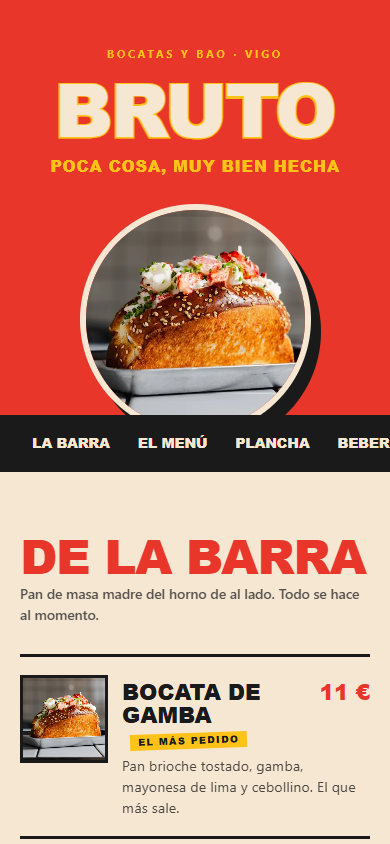
06 · RÓTULO
Bocatería · hamburguesería · taquería · pizzería
Fondo de color distinto por sección, display perfilada, borde ondulado y una tira de reclamo que corre. Ruidoso a propósito, legible como un cartel. El restaurante inventado es una bocatería porque el banco no tiene hamburguesa: antes que fingirla, se cambia el negocio.
Vende: identidad que el dueño puede llevarse a Instagram tal cual.
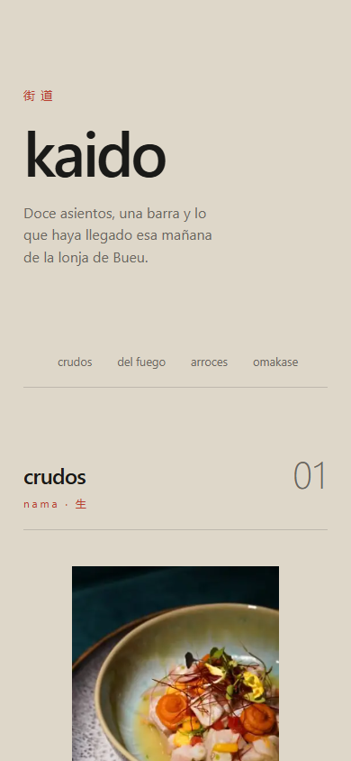
07 · BARRO
Japonés · nikkei · sushi · cocina de autor
Fondo arena, grotesca en minúscula, capítulos numerados con su nombre en japonés y una foto vertical centrada por capítulo. Muchísimo aire.
Vende: el japonés bueno compite con Deliveroo por foto fea.
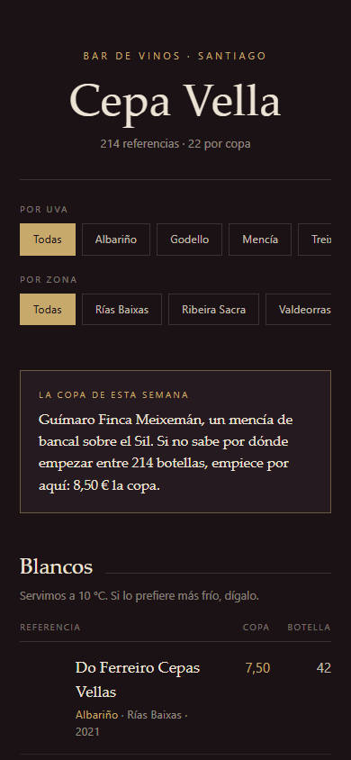
08 · BODEGA
Vinoteca · bar de vinos · carta de bodega
El único con estructura de datos propia: uva, zona, añada y dos precios (copa y botella). Filtros por uva y por zona. Al tocar, la ficha que contaría el camarero.
Vende: ningún competidor QR sabe hacer una carta de vinos.
Foto solo por copa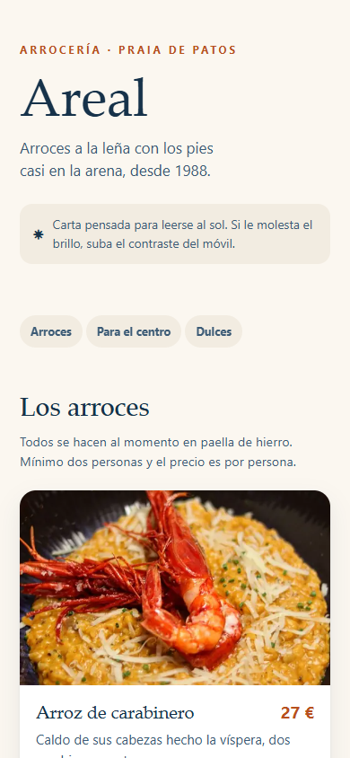
09 · CAL
Chiringuito · arrocería · terraza · mediterráneo
Cal, azul tinta y terracota. Cuerpo a 16 px y contraste de 12:1: ningún gris claro sobre blanco, porque al sol desaparece. Tarjeta ancha y sombra suave.
Vende: argumento técnico, se demuestra saliendo a la calle.
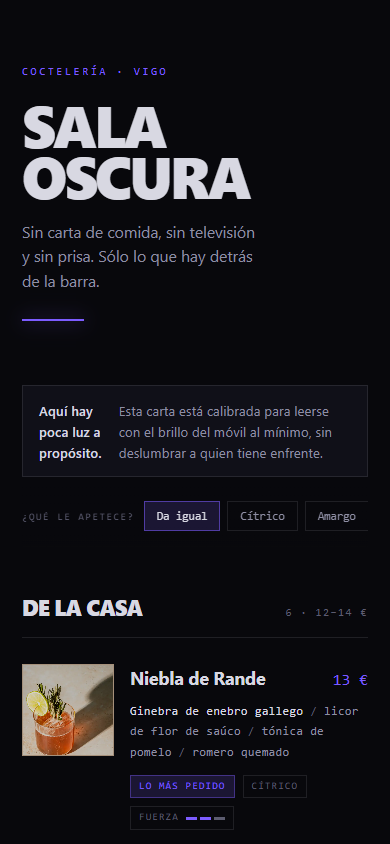
10 · NEÓN
Coctelería · gastrobar nocturno · after
Sin blanco puro (a brillo bajo deslumbra): la tinta tope es #d8d8e2. Foto en los de la casa, con el brillo bajado para no quemar la pantalla en una barra a oscuras; los clásicos van por ingredientes y medidor de fuerza.
Vende: donde más se mira el móvil es donde peor se ve una carta blanca.
Foto solo en los de la casa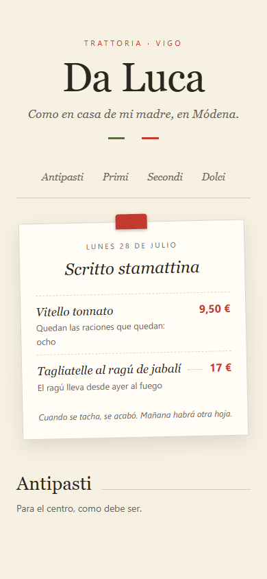
11 · TRATTORIA
Italiano · trattoria · osteria · pizzería
Serif italiana (Bodoni) y la hoja del día sujeta con un clip, escrita cada mañana y fechada. Los nombres de plato se escriben solos, de izquierda a derecha.
Vende: la escasez con encanto («cuando se tacha, se acabó»), robada a Osteria Francescana.
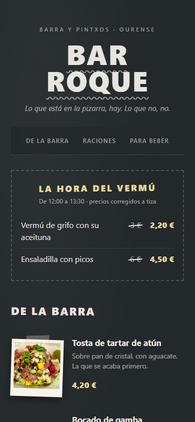
12 · PIZARRA
Bar de tapas · barra de pintxos · sidrería
Todo vive en una pizarra: la tiza escribe los titulares, los precios van en tiza amarilla y los pintxos estrella llevan su polaroid pegada con celo.
Vende: el precio del vermú tachado y corregido a mano, el anclaje más viejo y más honesto que existe. Referencia: las barras de San Sebastián.
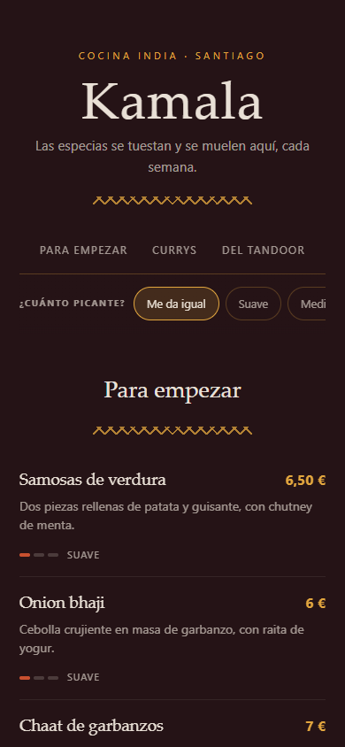
13 · ESPECIA
Indio · nepalí · pakistaní
Paleta de especiero (cúrcuma, chili, cardamomo), cenefa rangoli que se dibuja, y el dial «¿cuánto picante?» que filtra la carta de verdad. El thali como bundle.
Vende: quita el miedo nº1 del cliente español al indio. Elegir sin miedo es pedir más. Referencia: Gaggan.
Sin foto hasta la sesión del cliente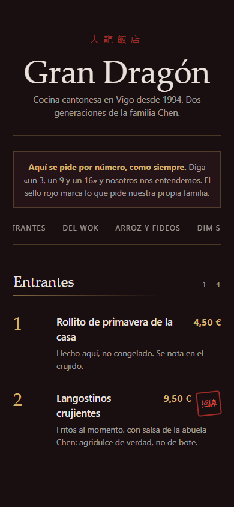
14 · DRAGÓN
Chino · cantonés · dim sum
Laca oscura, oro y jade (la estética Hakkasan) sobre el ritual más español que hay: pedir por número. El número rueda al entrar y el sello rojo 招牌 se estampa.
Vende: «el sello marca lo que pide nuestra propia familia»: no hay prueba social más honesta en un chino.
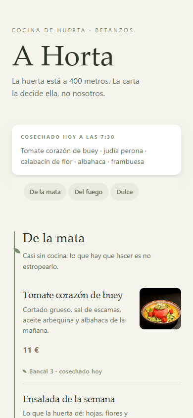
15 · HUERTA
Vegetariano · healthy · cocina de huerta
Salvia y tierra sobre crema verdosa; cada plato lleva su procedencia y su hora de cosecha. Un tallo crece por el margen de cada sección y en su nudo brota una hoja.
Vende: «cosechado hoy a las 7:30» vende más que cualquier adjetivo. Referencias: Eleven Madison Park y Azurmendi.
Tener buenas fotos no basta: si no se presentan bien, no sirven de nada. Estos tres detalles
son invisibles hasta que faltan, y son lo que un dueño percibe como «esto está bien hecho» sin
saber señalar por qué. Viven en _presentacion.css y _presentacion.js,
compartidos por los diez.
Cada foto lleva de fondo su propio color medio, calculado del fichero real (el
jamón entra desde un rosa #ac7478, la burrata desde un marrón oscuro).
Mientras los píxeles viajan no hay un rectángulo blanco ni un salto de layout: hay ya el color de lo que va a llegar. El destello blanco es el delator número uno de web barata.
La foto sube, se asienta desde una escala mayor y se enciende de desaturada a color, imitando un revelado. En cascada con sus hermanas, nunca todas a la vez.
Y con carácter propio: BRASA es lento y pesado, RÓTULO rebota, SUIZO es corto y nítido porque la retícula no dramatiza, GALERÍA tarda 1,4 s porque es cine.
Lo tocable se hunde un 3,5 % al pulsar. Lo que no es tocable, no. Un elemento que parece pulsable y no responde se lee como roto; uno que responde sin serlo es una promesa falsa.
Sin JavaScript o con prefers-reduced-motion, las fotos se ven igual: la
animación es un adorno, ver la comida no.
No todos los restaurantes quieren la carta llena de fotos, y no todos los registros la aguantan. Cuántas fotos lleva un registro no es una carencia, es una decisión de diseño — y de paso resuelve al cliente que no tiene fotos o no las quiere.
Brasa · Suizo · Rótulo · Cal · Galería. Cada plato se ve. Galería lleva el extremo: una foto ocupa la pantalla entera y no hay nada más en ella.
Mercado · Bodega · Neón. Las piezas del día, lo que va por copa, los cócteles de la casa. El fondo de carta va en texto: nadie pide una tabla de quesos por la foto.
Papel · Barro. Dos o tres imágenes grandes que respiran, no una miniatura por línea. Es la lección de Dishoom y Sakazuki: ahí la foto puntúa el texto, no lo sustituye.
Son además los dos registros que puede llevarse un restaurante con pocas fotos buenas.
La carta puede llevar vídeo (el chocolate cayendo, la sal sobre el chuletón), pero con la misma regla que todo lo demás: espectáculo sí, tómbola no, y fidelidad siempre.
Vídeo solo en el héroe: la pieza del día de Brasa y un pase de Galería ya lo llevan
(movimiento real sobre la foto real, 300-400 KB). Siempre muted, con la foto de
poster, se reproduce al entrar en pantalla y se pausa al salir.
Con ahorro de datos o motion reducido no hay autoplay: queda el poster y decide el comensal. Sin vídeo, la carta es exactamente la de antes.
ops/genera_video_plato.py (Veo, la misma clave que las fotos): parte
siempre de la foto real aprobada y solo admite escenas de un catálogo cerrado —
vapor, sal, queso rallado, chocolate, aceite, brasa de fondo, burbujas, giro lento.
Sin prompt libre, y la regla la firma el restaurante: solo se genera una escena que ese plato recibe de verdad. Un chorro de chocolate que la casa no sirve es re-emplatar en movimiento. Coste: un héroe de 6 s, ~1-2,5 $; una carta con 4-6 vídeos, menos de 15 $.
Abre Brasa servida por HTTP: el entrecot marca 31 € y el tartar sale tachado con
«agotado hoy» — nada de eso está en el HTML. Sale de estado-demo.json, que
simula lo que el panel escribe; cámbialo y recarga.
En producción ese JSON es Postgres editado desde panel.adiantai.es — precios,
disponibilidad y platos nuevos — con la maquinaria que ya sirve a Los Abetos: rebuild por
hook + parche de disponibilidad en runtime (disponibilidad.ts). El diseño es la
piel; el dato manda desde el panel. Pendiente para producto: portar cada registro como TEMA
de app-carta elegible en la ficha del cliente, y la columna platos.video_url
(gate humano de SQL).
Una sola firma por registro — la misma disciplina que «un héroe por pantalla»: diez efectos en
la misma carta es una feria, uno memorable es una marca. Solo propiedades de compositor, y todo
degrada: sin JavaScript o con prefers-reduced-motion, la carta se ve en su estado
final.
Brasa ← Etxebarri (nº2 del mundo, todo pasa por fuego): chispas que suben de la brasa en la portada, y la pieza del día con un travelling atado al scroll — el dedo es la cámara.
Mercado ← Aponiente (el chef del mar): la etiqueta se pega de un golpe seco al entrar, y el sello VENDIDO cae como un tampón de goma.
Galería ← Alchemist (la cena son actos): cada pase entra con travelling y el texto sube por capas, como títulos de película.
Papel ← Dishoom: la lámina se revela como en cubeta de laboratorio — entra lavada y quemada y asienta en su virado sepia.
Barro ← el «ma» japonés: la lámina se abre como un shoji, desde el centro hacia los lados, y el kanji respira al llegar.
Bodega ← El Celler de Can Roca: la miniatura de la copa se llena de abajo arriba, y al filtrar los supervivientes re-entran en cascada.
Cal ← Casa Jondal (el chiringuito hecho alta cocina): un barrido de sol cruza cada tarjeta una vez, como el reflejo del mediodía en un mantel.
Neón ← Paradiso (nº1 de los 50 Best Bars): el letrero se enciende con el parpadeo irregular de un neón real, una sola vez.
Rótulo ← Den (alta cocina que juega): las chapas caen como pegatinas y el precio del combo se estampa con rebote.
Suizo ← la contención de Noma: los puntos guía se dibujan del plato hacia el precio. La retícula no dramatiza; demuestra precisión.
La gente compra por lo que ve, así que cada palanca psicológica es visible, no un truco de copy. Y ninguna es falsa: escasez solo si se cumple, prueba social solo si es plausible. Un contador inventado de «3 personas mirando esto» es el mismo pecado que la hamburguesa falsa.
Brasa: el tomahawk de 68 € abre la carta y ancla — al lado, el entrecot de 29 € parece razonable. Y ahora lleva su maridaje (cross-sell que sube el ticket) y el badge «la que más sale».
Galería: el precio aparece al final, después de nueve pantallas de valor. Primero se desea, luego se paga.
Suizo: el precio cerrado del mediodía va en la propia nav («Mediodía 19,50»): es el ancla que su cliente eficiente está buscando.
Mercado: la carta prometía «si aparece tachado, ya voló» — ahora hay una pieza vendida de verdad: sello «Vendido · 13:40», foto en gris, nombre tachado. Ver que algo se agota hace real la urgencia de lo que queda.
Rótulo: «El menú Bruto» a precio cerrado con el ahorro visible («suelto saldría hasta en 19,50 €»): sube el ticket sin que nadie sienta que gasta más.
Papel: la manícula ☞ señala lo que la casa recomienda — la recomendación vende más que cualquier badge.
Bodega: elegir entre 214 botellas no es libertad, es parálisis. Los filtros por uva y zona funcionan de verdad (y se combinan), y «la copa de esta semana» da el punto de entrada a quien no sabe por dónde empezar.
Neón: de noche no se elige por nombre, se elige por ganas: «¿Qué le apetece?» — cítrico, amargo, salino… — filtra la carta. «La del Encargado» lleva todos los gustos: se adapta, así que siempre queda.
Cal: con sol y hambre, menos es más: tres saltos de nav y tiempos de espera a la vista, que es lo que baja la ansiedad del que pide arroz.
Interactiva y sencilla: tres mecanismos comunes (_consulta.css/js), cero curva de
aprendizaje, y todo degrada bien — sin JavaScript la carta se lee entera igual.
Nav de secciones pegajosa re-tintada por registro (chips en Cal, libro en Papel, puntos de pase en Galería). Salto suave y sección activa marcada mientras bajas.
Toca cualquier foto y la ves a pantalla completa, sobre su propio tono y en la variante grande. Si compra por lo que ve, que lo vea grande. Se cierra tocando o con Esc.
No son decoración: en Bodega uva y zona se combinan en Y; en Neón el estado de ánimo enseña solo lo que encaja y esconde secciones enteras si nada casa.
No es «no había errores de consola»: son medidas reales sobre el render.
Los diez medidos con scrollWidth − innerWidth en móvil pequeño. Resultado: 0 px
en los diez.
El rótulo de Bruto sí se cortaba y el overflow-x: hidden lo tapaba;
se caza midiendo el ancho del propio h1, no el del documento.
La carta actual tiene cuatro cosas flotando a la vez. Aquí, ninguna: quien escanea el QR ya está sentado — reservar sobra (decisión Yago 2026-07-28), y la nav pegajosa de secciones es parte del flujo, no un estorbo.
Decisión de 2026-07-28: no se vende una carta donde el comensal no vea el producto.
Las fotos las manda el restaurante y se llevan a calidad de estudio con
ops/mejora_foto.py (Gemini). La regla dura: reiluminar, nunca re-emplatar
— si lo que llega a la mesa no es la foto, la reclamación se la come el restaurante.
En estos prototipos las fotos salen del banco de stock que ya sirve producción, y por eso siguen faltando local, personas y postres. Se buscó relleno en bancos de licencia libre (Openverse/CC0) y se descartó: son instantáneas amateur, y varias traían logos de cadenas — un problema de marca peor que no tener foto.
Donde no hay foto honesta, el prototipo no la finge: Bruto es una bocatería y no una hamburguesería porque no hay hamburguesa en el banco, Mesa 12 manda los postres al camarero, y «La del Encargado» no lleva foto porque aún no existe.